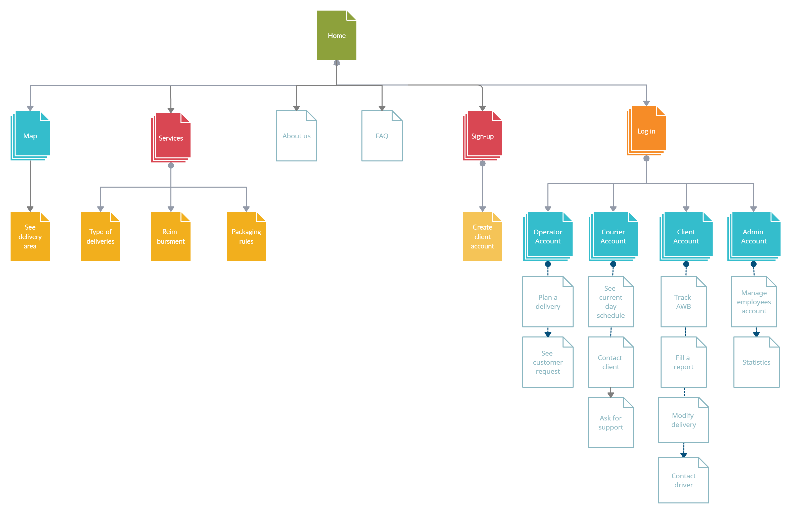

Parcel Shipping Simulator
Table of contents
Introduction
This website offers parcel shipping services in Iasi, being useful to every citizen. Our platform provides logistics operations for home deliveries with high efficiency and flexibility.
Overall Description
Product Perspective
Product Functions
The following major functions are identified:
- Schedule, postpone and cancel deliveries
- Pick-up parcels from given address
- Compute scales in the most efficient way
- Take into consideration external factors that might affect deliveries
- Track AWB
- Provide textual and visual statistics about deliveries' status in a speicific area
- Give notifications via email and RSS flux
User Classes and Characteristics
Our website has four major users:
- The administrator manages employees' acccounts and has access to their data. They can see weekly or monthly statistics on deliveries executed by their company in a specific area.
- The operators are given accounts which gives them access to the administrative part of the site. They deal with logistics, manipulate shipping's details and respond to customers' requests.
- The couriers are assigned to given areas and have accounts where they can see their daily planned deliveries along with a list of locations. The numbers of working drivers in a day is given by the amount of requests.
- The clients log into their accounts in order to receive support for different actions regarding the delivery, such as accessing information about its status and contacting the driver.
Operating Environment
- XAMPP server
- operating system: Windows
- database: SQL database
- platform: HTML/CSS/PHP
Design and Implementation Constraints
- The website will be offline, on a local server on our computer.
- We use an open source license.
- The website is built without any frameworks on front-end and back-end levels.
External Interface Requirements
The website has the following Sitemap:

System Features
- Manage logistics (operator)
- Description: The operator manages orders' flow, introduces details of delivery (pick-up/drop-off address, client's personal information, generates AWB), sends notifications to clients via email and RSS and responds to clients' requests.
- Priority: This feature's implementation is of high priority, because it is essential for operators to easily use the Web application.
- See and modify delivery details (client)
- Description: The client is able to enter the AWB corresponding to their delivery and track its status in real-time. They can also modify details such as prefered delivery hour, contact the driver, cancel/postpone delivery and ask for a return if the package has issues.
- Priority: This feature has rather high priority, since the client's requests must be honoured as efficiently as possible.
- View daily schedule (courier)
- Description: The courier has access to a list of deliveries that needs to be honoured in a day. He picks-up parcels from the deposit and is given the list of addresses where they are supposed to be dropped-off. Based on it, he figures the scales in the most efficient possible way.
- Priority: This feature also has high priority since the driver needs to be well-informed about all the important details in order to best manage the deliveries.
- Manage employees and view statistics (administrator)
- Description: The administrator has access to the database where all the employees (couriers and operators) are registred. He also has access to all the orders, where he can see weekly/monthly statistics about the company's deliveries in different areas.
- Priority: This feature is important at an organizational level, since the administrator must know who his employees are and be aware of the flow of deliveries.
How we worked as a team
- We had a first meeting where each of us pointed out their vision about how the site should look, where we also started the ideas for the Scholarly HTML.
- We used Trello to organize ourselves better: See here
- We decided together about a color theme and about what interfaces we were going to implement.
- We divided our tasks in the following way:
- Alin: Started MainWindow from scratch (Set background, Navigation Bar and its Buttons), Client Interface, Administrator (Manage Employees)
- Andreea: Scholarly HTML (Write in HTML), Main Window (Services, About Us, FAQ, Footer, Login and SignUp buttons implementation), Courier Interface, Administrator Interface (Statistics)
- Rares: Created Logo and Background image in Photoshop, Operator Interface, Map (company's working area)